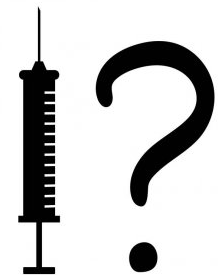

How Bad is My Batch 
Batch codes and associated deaths, disabilities and illnesses for Covid 19 Vaccines
home | Booster Warnings by Month | Moderna | Pfizer | Janssen | Moderna (outside USA) | Pfizer (outside USA) | Janssen (outside USA) | Severe | Symptom | Treatment | Children | Clusters | All or Nothing | Time till onset | Gender | Geography | States | Causality | Japan | Sweden | Video Library | Case Reports | Lot Sizes | Lot Expiry Dates | Whistle Blowers | Data Cleaning | Background | Download Source Code | Donate
This site may slow down due to high traffic. A backup site has been created - HowBadisMyBatch.com to reduce overload Thankyou.
!! NEW : Vaccine injury / death differs by state. See States
!! NEW : Lot expiry list reveals which lots are biologically active vs placebo. See Lot Expiry Dates page.
!! NEW : Gender differences in response to vaccine. See Gender
!! NEW : Revelations from Sweden See Sweden
!! NEW : Documents submitted "People vs MHRA" See Prosecution docs
!! NEW : Robert Malone, the inventor of mRNA technology, talks about his vaccine injury.
**Displays number of deaths and disabilities associated with each batch/lot number = indication of relative toxicity of one batch/lot compared to another
**No one currently knows the reason why some batches/lots are associated with excessive deaths, disabilities and adverse reactions (up to 50 x). Until we do know, it is best to be cautious
**["Batch-code" = "Lot Number" = the number they write on your vaccination card.]
Check out your batch code (lot number)
Latest Info on Boosters
Variation in Toxicity
Do the Batch Codes Code for Toxicity?
VAERS Database
Data Source
USA Data : All data is sourced from VAERS, a public database of over 700,000 adverse reaction reports for Moderna, Pfizer and Janssen Covid 19 vaccines in the USA.
Foreign Data : VAERS database now also includes data for Moderna, Pfizer and Janssen Covid 19 vaccines in countries outside of the USA. This data can be found here - Vaccine Adverse Event Reporting System (VAERS) - the last table listed. This non-domestic data has been submitted by foreign regulatory agencies and consists of approximately 1,000,000 adverse reaction reports.
Our intention is to present the VAERS data in an accessible and unadulterated form, that can be easily verified using the links below
Contact
Created by Craig Paardekooper ©2021 | covid.science@yahoo.com